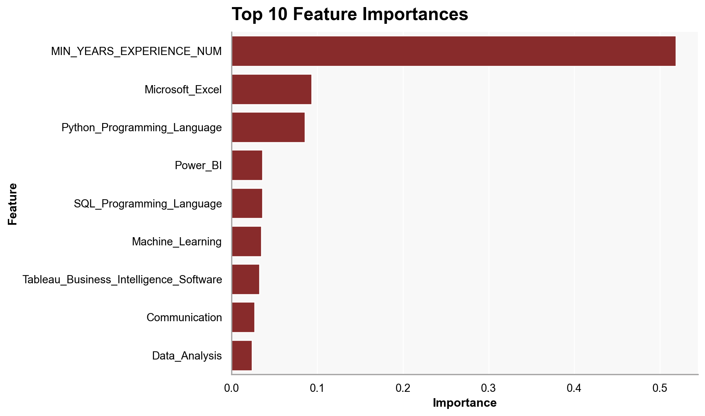

import os
import pandas as pd
import numpy as np
from pyspark.sql import SparkSession
# Start a Spark session
spark = SparkSession.builder.config("spark.driver.host", "localhost").appName("JobPostingsAnalysis").getOrCreate()
spark.catalog.clearCache()
# Load the CSV file into a Spark DataFrame
df = spark.read.option("header", "true").option("inferSchema", "true").option(
"multiLine", "true").option("escape", "\"").csv("./data/clean_job_postings.csv")
# Register the DataFrame as a temporary SQL view
df.createOrReplaceTempView("clean_job_postings")
# Show Schema and Sample Data
#print("---This is Diagnostic check, No need to print it in the final doc---")
# comment the lines below when rendering the submission
#df.printSchema()
#df.show(5)Predictive Modeling
Using machine learning methods to predict job growth trends.
Filtering and Feature Selection
from pyspark.sql import functions as F
topic_keywords = [
"data scientist",
"data analyst",
"business analyst",
"business intelligence",
"machine learning",
"analytics"
]
condition = None
for kw in topic_keywords:
current_condition = F.lower(F.col("SPECIALIZED_OCCUPATION")).contains(kw)
condition = current_condition if condition is None else (condition | current_condition)
df_analysis = df.filter(F.col("SALARY").isNotNull()) \
.filter(F.col("SPECIALIZED_OCCUPATION").isNotNull()) \
.filter(condition)
df_analysis.select("SPECIALIZED_OCCUPATION", "SALARY").show(10, truncate=False)
print("Filtered row count:", df_analysis.count())+----------------------+--------+
|SPECIALIZED_OCCUPATION|SALARY |
+----------------------+--------+
|Data Analyst |110155.0|
|Data Analyst |92962.0 |
|Data Analyst |107645.0|
|Data Analyst |170000.0|
|Data Analyst |110155.0|
|Data Analyst |118560.0|
|Data Analyst |140756.0|
|Data Analyst |156038.0|
|Data Analyst |84678.0 |
|Data Analyst |161200.0|
+----------------------+--------+
only showing top 10 rows
Filtered row count: 16246Feature Engineering
skill_features = [
"Python (Programming Language)",
"SQL (Programming Language)",
"Microsoft Excel",
"Data Analysis",
"Machine Learning",
"Power BI",
"Tableau (Business Intelligence Software)",
"Communication"
]
df_analysis = df_analysis.withColumn(
"ALL_SKILLS_TEXT",
F.concat_ws(
" ",
F.coalesce(F.col("SOFTWARE_SKILLS_NAME"), F.lit("")),
F.coalesce(F.col("SPECIALIZED_SKILLS_NAME"), F.lit("")),
F.coalesce(F.col("COMMON_SKILLS_NAME"), F.lit(""))
)
)
for skill in skill_features:
safe_name = skill.replace(" ", "_") \
.replace("(", "") \
.replace(")", "") \
.replace("/", "_") \
.replace("-", "_")
df_analysis = df_analysis.withColumn(
safe_name,
F.when(F.col("ALL_SKILLS_TEXT").contains(skill), 1).otherwise(0)
)
df_analysis.select(
"SALARY",
"Python_Programming_Language",
"SQL_Programming_Language",
"Microsoft_Excel",
"Data_Analysis",
"Machine_Learning",
"Power_BI",
"Tableau_Business_Intelligence_Software",
"Communication"
).show(5, truncate=False)+--------+---------------------------+------------------------+---------------+-------------+----------------+--------+--------------------------------------+-------------+
|SALARY |Python_Programming_Language|SQL_Programming_Language|Microsoft_Excel|Data_Analysis|Machine_Learning|Power_BI|Tableau_Business_Intelligence_Software|Communication|
+--------+---------------------------+------------------------+---------------+-------------+----------------+--------+--------------------------------------+-------------+
|110155.0|1 |0 |0 |1 |0 |1 |1 |0 |
|92962.0 |1 |1 |1 |1 |1 |0 |1 |0 |
|107645.0|1 |0 |0 |1 |0 |0 |0 |1 |
|170000.0|1 |1 |0 |1 |0 |0 |0 |1 |
|110155.0|1 |0 |0 |1 |0 |1 |1 |0 |
+--------+---------------------------+------------------------+---------------+-------------+----------------+--------+--------------------------------------+-------------+
only showing top 5 rowsdf_analysis = df_analysis.withColumn(
"MIN_YEARS_EXPERIENCE_NUM",
F.when(
F.col("MIN_YEARS_EXPERIENCE").rlike("^[0-9]+(\\.[0-9]+)?$"),
F.col("MIN_YEARS_EXPERIENCE").cast("double")
).otherwise(0.0)
)
df_analysis = df_analysis.fillna({
"REMOTE_TYPE_NAME": "Not Listed",
"MIN_EDULEVELS_NAME": "Not Listed"
})
df_analysis.select(
"MIN_YEARS_EXPERIENCE",
"MIN_YEARS_EXPERIENCE_NUM",
"REMOTE_TYPE_NAME",
"MIN_EDULEVELS_NAME"
).show(10, truncate=False)+--------------------+------------------------+----------------+-------------------+
|MIN_YEARS_EXPERIENCE|MIN_YEARS_EXPERIENCE_NUM|REMOTE_TYPE_NAME|MIN_EDULEVELS_NAME |
+--------------------+------------------------+----------------+-------------------+
|NULL |0.0 |Remote |Bachelor's degree |
|2.0 |2.0 |[None] |Bachelor's degree |
|10.0 |10.0 |Not Remote |High school or GED |
|6.0 |6.0 |[None] |No Education Listed|
|NULL |0.0 |Remote |Bachelor's degree |
|5.0 |5.0 |Remote |No Education Listed|
|NULL |0.0 |[None] |Bachelor's degree |
|2.0 |2.0 |Remote |Master's degree |
|NULL |0.0 |[None] |No Education Listed|
|6.0 |6.0 |[None] |No Education Listed|
+--------------------+------------------------+----------------+-------------------+
only showing top 10 rowsVariable Selection
continuous_cols = [
"MIN_YEARS_EXPERIENCE_NUM",
"Python_Programming_Language",
"SQL_Programming_Language",
"Microsoft_Excel",
"Data_Analysis",
"Machine_Learning",
"Power_BI",
"Tableau_Business_Intelligence_Software",
"Communication"
]
categorical_cols = [
"REMOTE_TYPE_NAME",
"SPECIALIZED_OCCUPATION"
]
target_col = "SALARY"
df_final = df_analysis.select(continuous_cols + categorical_cols + [target_col])
df_final = df_final.dropna(subset=continuous_cols + categorical_cols + [target_col])
df_final.show(5, truncate=False)+------------------------+---------------------------+------------------------+---------------+-------------+----------------+--------+--------------------------------------+-------------+----------------+----------------------+--------+
|MIN_YEARS_EXPERIENCE_NUM|Python_Programming_Language|SQL_Programming_Language|Microsoft_Excel|Data_Analysis|Machine_Learning|Power_BI|Tableau_Business_Intelligence_Software|Communication|REMOTE_TYPE_NAME|SPECIALIZED_OCCUPATION|SALARY |
+------------------------+---------------------------+------------------------+---------------+-------------+----------------+--------+--------------------------------------+-------------+----------------+----------------------+--------+
|0.0 |1 |0 |0 |1 |0 |1 |1 |0 |Remote |Data Analyst |110155.0|
|2.0 |1 |1 |1 |1 |1 |0 |1 |0 |[None] |Data Analyst |92962.0 |
|10.0 |1 |0 |0 |1 |0 |0 |0 |1 |Not Remote |Data Analyst |107645.0|
|6.0 |1 |1 |0 |1 |0 |0 |0 |1 |[None] |Data Analyst |170000.0|
|0.0 |1 |0 |0 |1 |0 |1 |1 |0 |Remote |Data Analyst |110155.0|
+------------------------+---------------------------+------------------------+---------------+-------------+----------------+--------+--------------------------------------+-------------+----------------+----------------------+--------+
only showing top 5 rowsString Indexing and One-Hot Encoding
from pyspark.ml.feature import StringIndexer, OneHotEncoder, VectorAssembler
from pyspark.ml import Pipeline
indexers = [
StringIndexer(inputCol=col, outputCol=f"{col}_idx", handleInvalid="skip")
for col in categorical_cols
]
encoders = [
OneHotEncoder(inputCol=f"{col}_idx", outputCol=f"{col}_vec", dropLast=True)
for col in categorical_cols
]
assembler = VectorAssembler(
inputCols=continuous_cols + [f"{col}_vec" for col in categorical_cols],
outputCol="features"
)
pipeline = Pipeline(stages=indexers + encoders + [assembler])
data = pipeline.fit(df_final).transform(df_final)
ml_ready = data.select("SALARY", "features")
ml_ready.show(5, truncate=False)+--------+-------------------------------------------------------------+
|SALARY |features |
+--------+-------------------------------------------------------------+
|110155.0|(15,[1,4,6,7,10,12],[1.0,1.0,1.0,1.0,1.0,1.0]) |
|92962.0 |[2.0,1.0,1.0,1.0,1.0,1.0,0.0,1.0,0.0,1.0,0.0,0.0,1.0,0.0,0.0]|
|107645.0|(15,[0,1,4,8,12],[10.0,1.0,1.0,1.0,1.0]) |
|170000.0|(15,[0,1,2,4,8,9,12],[6.0,1.0,1.0,1.0,1.0,1.0,1.0]) |
|110155.0|(15,[1,4,6,7,10,12],[1.0,1.0,1.0,1.0,1.0,1.0]) |
+--------+-------------------------------------------------------------+
only showing top 5 rowsTrain-Test Split
train_df, test_df = ml_ready.randomSplit([0.8, 0.2], seed=42)
print(f"Dimensions of full data: ({ml_ready.count()}, {len(ml_ready.columns)})")
print(f"Dimensions of training data: ({train_df.count()}, {len(train_df.columns)})")
print(f"Dimensions of test data: ({test_df.count()}, {len(test_df.columns)})")Dimensions of full data: (16246, 2)
Dimensions of training data: (13070, 2)
Dimensions of test data: (3176, 2)Models
Linear Regression Model
from pyspark.ml.regression import LinearRegression
from pyspark.ml.evaluation import RegressionEvaluator
lr = LinearRegression(
featuresCol="features",
labelCol="SALARY",
predictionCol="prediction",
solver="normal",
regParam=0.0,
elasticNetParam=0.0
)
lr_model = lr.fit(train_df)
predictions = lr_model.transform(test_df)
predictions.select("SALARY", "prediction").show(10, truncate=False)+-------+------------------+
|SALARY |prediction |
+-------+------------------+
|22880.0|65526.312859986225|
|24544.0|74645.87923086029 |
|24960.0|65526.312859986225|
|27300.0|84502.01625658339 |
|29120.0|60014.80740419603 |
|30888.0|90733.05994067735 |
|31200.0|69804.12556031936 |
|31200.0|60014.80740419603 |
|31366.0|90733.05994067735 |
|31387.0|60014.80740419603 |
+-------+------------------+
only showing top 10 rowsr2 = RegressionEvaluator(
labelCol="SALARY",
predictionCol="prediction",
metricName="r2"
).evaluate(predictions)
rmse = RegressionEvaluator(
labelCol="SALARY",
predictionCol="prediction",
metricName="rmse"
).evaluate(predictions)
mae = RegressionEvaluator(
labelCol="SALARY",
predictionCol="prediction",
metricName="mae"
).evaluate(predictions)
print("Intercept:", lr_model.intercept)
print("Coefficients:", lr_model.coefficients)
print("R-squared:", r2)
print("RMSE:", rmse)
print("MAE:", mae)Intercept: 58868.81253451851
Coefficients: [5511.505455790201,13085.650991349874,4365.873577611061,-14697.890696264021,-6231.043684093976,9371.088009762505,-5536.336721807112,-1243.1372382235588,3608.0609150838577,1145.9948696775155,4971.8648574458175,7309.5459787087,27110.191621397473,27892.89695817762,25033.841986111947]
R-squared: 0.26359313758659175
RMSE: 33180.93205519898
MAE: 24670.32045106661num_features = lr_model.coefficients.size
feature_names = continuous_cols.copy()
remaining_features = num_features - len(feature_names)
for i in range(remaining_features):
feature_names.append(f"encoded_category_{i}")
print("Length of features:", len(feature_names))
print("Length of coefs:", lr_model.coefficients.size)Length of features: 15
Length of coefs: 15summary = lr_model.summary
coefficients = list(lr_model.coefficients.toArray())
standard_errors = list(summary.coefficientStandardErrors)
t_values = list(summary.tValues)
p_values = list(summary.pValues)
feature_names_with_intercept = feature_names + ["intercept"]
coefficients_with_intercept = coefficients + [lr_model.intercept]
print("Length of features:", len(feature_names_with_intercept))
print("Length of coefs:", len(coefficients_with_intercept))
print("Length of se:", len(standard_errors))
print("Length of tvals:", len(t_values))
print("Length of p vals:", len(p_values))Length of features: 16
Length of coefs: 16
Length of se: 16
Length of tvals: 16
Length of p vals: 16# rows = []
# for i in range(len(feature_names_with_intercept)):
# rows.append((
# feature_names_with_intercept[i],
# float(coefficients_with_intercept[i]),
# float(standard_errors[i]),
# float(t_values[i]),
# float(p_values[i])
# ))
# coef_table = spark.createDataFrame(
# rows,
# ["Feature", "Estimate", "Std Error", "t-stat", "P-Value"]
# )
coef_table = pd.DataFrame({
"Feature": feature_names_with_intercept,
"Estimate": [f"{v:.4f}" if v is not None else None for v in coefficients_with_intercept],
"Std Error": [f"{v:.4f}" if v is not None else None for v in standard_errors],
"t-stat": [f"{v:.4f}" if v is not None else None for v in t_values],
"P-Value": [f"{v:.4f}" if v is not None else None for v in p_values]
})
coef_table.to_csv("./data/lr_summary.csv", index=False)
# coef_table.show(truncate=False)
# coef_table_pd = coef_table.toPandas()
# coef_table_pd| Feature | Estimate | Std Error | t-stat | P-Value |
|---|---|---|---|---|
| MIN_YEARS_EXPERIENCE_NUM | 5511.505500 | 105.177800 | 52.401800 | 0.000000 |
| Python_Programming_Language | 13085.651000 | 747.707100 | 17.501000 | 0.000000 |
| SQL_Programming_Language | 4365.873600 | 705.575000 | 6.187700 | 0.000000 |
| Microsoft_Excel | -14697.890700 | 675.578700 | -21.756000 | 0.000000 |
| Data_Analysis | -6231.043700 | 763.668400 | -8.159400 | 0.000000 |
| Machine_Learning | 9371.088000 | 1073.225400 | 8.731700 | 0.000000 |
| Power_BI | -5536.336700 | 734.934100 | -7.533100 | 0.000000 |
| Tableau_Business_Intelligence_Software | -1243.137200 | 717.315600 | -1.733000 | 0.083100 |
| Communication | 3608.060900 | 608.989200 | 5.924700 | 0.000000 |
| encoded_category_0 | 1145.994900 | 2015.445300 | 0.568600 | 0.569600 |
| encoded_category_1 | 4971.864900 | 2072.797700 | 2.398600 | 0.016500 |
| encoded_category_2 | 7309.546000 | 2441.012100 | 2.994500 | 0.002800 |
| encoded_category_3 | 27110.191600 | 1929.230900 | 14.052300 | 0.000000 |
| encoded_category_4 | 27892.897000 | 2096.474000 | 13.304700 | 0.000000 |
| encoded_category_5 | 25033.842000 | 2048.763000 | 12.219000 | 0.000000 |
| intercept | 58868.812500 | 2674.386100 | 22.012100 | 0.000000 |
from IPython.display import display
summary = lr_model.summary
coef_table = pd.DataFrame({
"Term": feature_names + ["Intercept"],
"Estimate": list(lr_model.coefficients.toArray()) + [lr_model.intercept],
"Std. Error": list(summary.coefficientStandardErrors),
"t value": list(summary.tValues),
"Pr(>|t|)": list(summary.pValues)
})
def significance_stars(p):
if p < 0.001:
return "***"
if p < 0.01:
return "**"
if p < 0.05:
return "*"
if p < 0.1:
return "."
return ""
coef_table["stars"] = coef_table["Pr(>|t|)"].apply(significance_stars)
model_stats = pd.DataFrame({
"Statistic": ["R-squared", "RMSE", "MAE", "Observations", "Residual DF"],
"Value": [r2, rmse, mae, summary.numInstances, summary.degreesOfFreedom]
})
# Save raw data tables
coef_table.to_csv("./data/lr_coefficients.csv", index=False)
model_stats.to_csv("./data/lr_model_stats.csv", index=False)
# Build display versions
coef_display = coef_table.copy()
coef_display["Estimate"] = coef_display.apply(
lambda row: f"{row['Estimate']:.4f}{row['stars']}", axis=1
)
coef_display["Std. Error"] = coef_display["Std. Error"].map(lambda x: f"{x:.4f}")
coef_display["t value"] = coef_display["t value"].map(lambda x: f"{x:.4f}")
coef_display["Pr(>|t|)"] = coef_display["Pr(>|t|)"].map(lambda x: f"{x:.4f}")
coef_display = coef_display.drop(columns=["stars"])
model_stats_display = model_stats.copy()
model_stats_display["Value"] = model_stats_display["Value"].map(
lambda x: f"{x:.4f}" if isinstance(x, (int, float, np.floating)) else x
)
# Show nicely in Quarto
# display(coef_display.style.hide(axis="index"))
# display(model_stats_display.style.hide(axis="index"))Linear Regression Results
Coefficients
| Term | Estimate | Std. Error | t value | Pr(>|t|) |
|---|---|---|---|---|
| MIN_YEARS_EXPERIENCE_NUM | 5511.5055*** | 105.1778 | 52.4018 | 0.0000 |
| Python_Programming_Language | 13085.6510*** | 747.7071 | 17.5010 | 0.0000 |
| SQL_Programming_Language | 4365.8736*** | 705.5750 | 6.1877 | 0.0000 |
| Microsoft_Excel | -14697.8907*** | 675.5787 | -21.7560 | 0.0000 |
| Data_Analysis | -6231.0437*** | 763.6684 | -8.1594 | 0.0000 |
| Machine_Learning | 9371.0880*** | 1073.2254 | 8.7317 | 0.0000 |
| Power_BI | -5536.3367*** | 734.9341 | -7.5331 | 0.0000 |
| Tableau_Business_Intelligence_Software | -1243.1372. | 717.3156 | -1.7330 | 0.0831 |
| Communication | 3608.0609*** | 608.9892 | 5.9247 | 0.0000 |
| encoded_category_0 | 1145.9949 | 2015.4453 | 0.5686 | 0.5696 |
| encoded_category_1 | 4971.8649* | 2072.7977 | 2.3986 | 0.0165 |
| encoded_category_2 | 7309.5460** | 2441.0121 | 2.9945 | 0.0028 |
| encoded_category_3 | 27110.1916*** | 1929.2309 | 14.0523 | 0.0000 |
| encoded_category_4 | 27892.8970*** | 2096.4740 | 13.3047 | 0.0000 |
| encoded_category_5 | 25033.8420*** | 2048.7630 | 12.2190 | 0.0000 |
| Intercept | 58868.8125*** | 2674.3861 | 22.0121 | 0.0000 |
Model Fit
| Statistic | Value |
|---|---|
| R-squared | 0.2636 |
| RMSE | 33180.9321 |
| MAE | 24670.3205 |
| Observations | 13070.0000 |
| Residual DF | 13054.0000 |
Random Forest Regression Model
from pyspark.ml.regression import RandomForestRegressor
rf = RandomForestRegressor(
featuresCol="features",
labelCol="SALARY",
predictionCol="prediction_rf",
numTrees=200,
maxDepth=8,
seed=42
)
rf_model = rf.fit(train_df)
rf_predictions = rf_model.transform(test_df)
rf_predictions.select("SALARY", "prediction_rf").show(10, truncate=False)+-------+-----------------+
|SALARY |prediction_rf |
+-------+-----------------+
|22880.0|74395.34922682721|
|24544.0|75209.30379826525|
|24960.0|74395.34922682721|
|27300.0|85943.64957550653|
|29120.0|75621.4272932925 |
|30888.0|87809.14480255818|
|31200.0|72673.31771597237|
|31200.0|75621.4272932925 |
|31366.0|87809.14480255818|
|31387.0|75621.4272932925 |
+-------+-----------------+
only showing top 10 rowsr2_rf = RegressionEvaluator(
labelCol="SALARY",
predictionCol="prediction_rf",
metricName="r2"
).evaluate(rf_predictions)
rmse_rf = RegressionEvaluator(
labelCol="SALARY",
predictionCol="prediction_rf",
metricName="rmse"
).evaluate(rf_predictions)
mae_rf = RegressionEvaluator(
labelCol="SALARY",
predictionCol="prediction_rf",
metricName="mae"
).evaluate(rf_predictions)
print("Random Forest Regression R-squared:", r2_rf)
print("Random Forest Regression RMSE:", rmse_rf)
print("Random Forest Regression MAE:", mae_rf)Random Forest Regression R-squared: 0.4014146659916389
Random Forest Regression RMSE: 29915.254626324524
Random Forest Regression MAE: 21686.376757119404num_rf_features = rf_model.featureImportances.size
rf_feature_names = continuous_cols.copy()
remaining_rf_features = num_rf_features - len(rf_feature_names)
for i in range(remaining_rf_features):
rf_feature_names.append(f"encoded_category_{i}")
print("Length of feature names:", len(rf_feature_names))
print("Length of importances:", rf_model.featureImportances.size)Length of feature names: 15
Length of importances: 15import pandas as pd
rf_importances = list(rf_model.featureImportances.toArray())
rf_importance_df = pd.DataFrame({
"Feature": rf_feature_names,
"Importance": rf_importances
}).sort_values(by="Importance", ascending=False)
rf_importance_df| Feature | Importance | |
|---|---|---|
| 0 | MIN_YEARS_EXPERIENCE_NUM | 0.518505 |
| 3 | Microsoft_Excel | 0.093515 |
| 1 | Python_Programming_Language | 0.085744 |
| 6 | Power_BI | 0.035792 |
| 2 | SQL_Programming_Language | 0.035721 |
| 5 | Machine_Learning | 0.034820 |
| 7 | Tableau_Business_Intelligence_Software | 0.032605 |
| 10 | encoded_category_1 | 0.031921 |
| 8 | Communication | 0.026638 |
| 4 | Data_Analysis | 0.023878 |
| 9 | encoded_category_0 | 0.021428 |
| 12 | encoded_category_3 | 0.019959 |
| 13 | encoded_category_4 | 0.019235 |
| 14 | encoded_category_5 | 0.011045 |
| 11 | encoded_category_2 | 0.009194 |
import matplotlib.pyplot as plt
import seaborn as sns
top10_rf_clean = rf_importance_df[
~rf_importance_df["Feature"].str.contains("encoded_category")
].head(10)
top10_rf_clean = rf_importance_df[
~rf_importance_df["Feature"].str.contains("encoded_category")
].head(10)
plt.figure(figsize=(10, 6))
sns.barplot(
data=top10_rf_clean,
x="Importance",
y="Feature"
)
plt.title("Top 10 Feature Importances", loc="left")
plt.xlabel("Importance")
plt.ylabel("Feature")
plt.tight_layout()
plt.savefig("images/rf_feature_importance_v2.png", dpi=300)
plt.show()

K-Means Clustering
cluster_features = [
"Python_Programming_Language",
"SQL_Programming_Language",
"Microsoft_Excel",
"Data_Analysis",
"Machine_Learning",
"Power_BI",
"Tableau_Business_Intelligence_Software",
"Communication"
]
df_cluster_ready = df_analysis.select(
"ONET_NAME",
"SPECIALIZED_OCCUPATION",
*cluster_features
).dropna(subset=["ONET_NAME"])
df_cluster_ready.show(5, truncate=False)
print("Rows ready for clustering:", df_cluster_ready.count())from pyspark.ml.feature import VectorAssembler
assembler = VectorAssembler(
inputCols=cluster_features,
outputCol="features"
)
cluster_data = assembler.transform(df_cluster_ready)
cluster_data.select("ONET_NAME", "SPECIALIZED_OCCUPATION", "features").show(5, truncate=False)from pyspark.ml.clustering import KMeans
kmeans = KMeans(
featuresCol="features",
predictionCol="cluster",
k=3,
seed=42
)
kmeans_model = kmeans.fit(cluster_data)
cluster_predictions = kmeans_model.transform(cluster_data)
cluster_predictions.select(
"SPECIALIZED_OCCUPATION",
"ONET_NAME",
"cluster"
).show(15, truncate=False)from pyspark.ml.evaluation import ClusteringEvaluator
evaluator = ClusteringEvaluator(
featuresCol="features",
predictionCol="cluster",
metricName="silhouette"
)
silhouette = evaluator.evaluate(cluster_predictions)
print("Silhouette Score:", silhouette)cluster_onet = cluster_predictions.groupBy("cluster", "ONET_NAME") \
.count() \
.orderBy("cluster", F.col("count").desc())
cluster_onet.show(30, truncate=False)centers = kmeans_model.clusterCenters()
for i, center in enumerate(centers):
print(f"Cluster {i} center:")
for feature_name, value in zip(cluster_features, center):
print(f" {feature_name}: {round(float(value), 3)}")from pyspark.ml.feature import PCA
pca = PCA(k=2, inputCol="features", outputCol="pcaFeatures")
pca_model = pca.fit(cluster_predictions)
pca_result = pca_model.transform(cluster_predictions)
pca_pd = pca_result.select(
"cluster",
"SPECIALIZED_OCCUPATION",
"ONET_NAME",
"pcaFeatures"
).toPandas()
pca_pd["PC1"] = pca_pd["pcaFeatures"].apply(lambda v: float(v[0]))
pca_pd["PC2"] = pca_pd["pcaFeatures"].apply(lambda v: float(v[1]))
pca_pd.head()plt.figure(figsize=(10, 7))
sns.scatterplot(
data=pca_pd,
x="PC1",
y="PC2",
hue="cluster",
palette=["#DC1212", "#FA8072", "#8B0000"],
s=70,
alpha=0.65,
)
plt.title("K-Means Clusters Based on Skills",loc="left")
plt.xlabel("Principal Component 1")
plt.ylabel("Principal Component 2")
plt.legend(title="Cluster")
plt.grid(alpha=0.2)
plt.tight_layout()
plt.savefig("./images/kmeans_clusters.png", dpi=300)
plt.show()
cluster_counts_pd = (
cluster_predictions.groupBy("cluster")
.count()
.orderBy("cluster")
.toPandas()
)
plt.figure(figsize=(10, 6))
sns.barplot(data=cluster_counts_pd, x="cluster", y="count")
plt.title("Number of Job Postings in Each Cluster", loc="left")
plt.xlabel("Cluster")
plt.ylabel("Count")
plt.tight_layout()
plt.savefig("./images/cluster_counts.png", dpi=300)
plt.show()